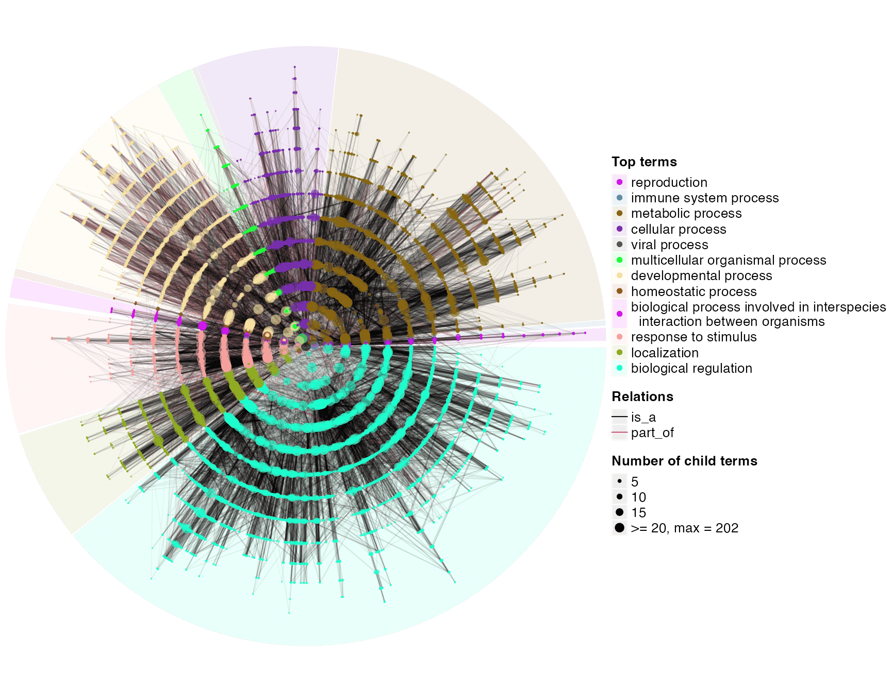
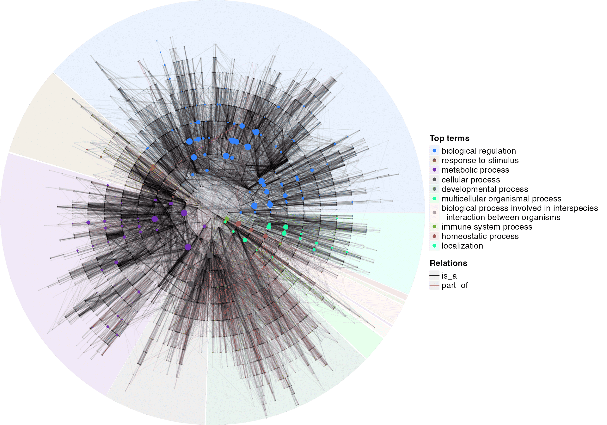
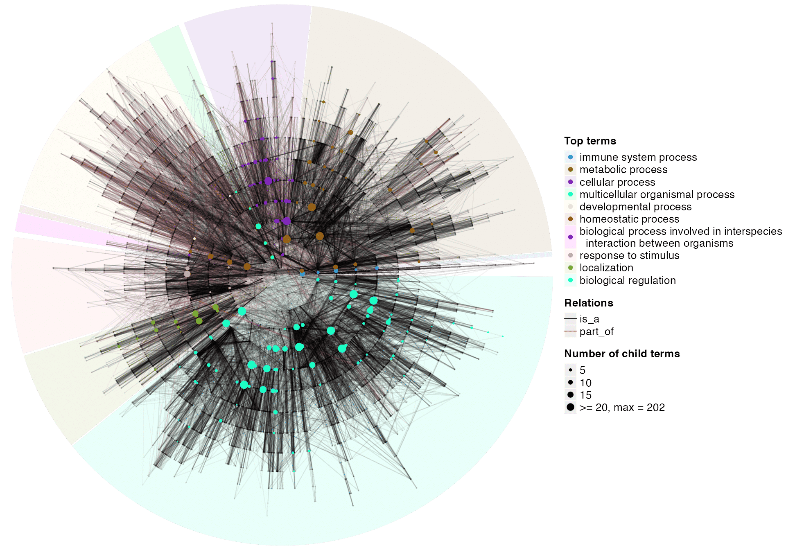

vignettes/v7_dag_visualization.Rmd
v7_dag_visualization.RmdThere are two functions for visualizing DAGs. dag_graphviz() uses the DiagrammeR package to visualize small DAGs as HTML widgets. dag_circular_viz() uses a circular layout for large DAGs.
Let’s first create a small DAG.
library(simona)
parents = c("a", "a", "b", "b", "c", "d")
children = c("b", "c", "c", "d", "e", "f")
dag_small = create_ontology_DAG(parents, children)
dag_graphviz(dag_small)The argument node_param can be set to a list of graphical parameters.
color = sample(colors(), 6)
shape = c("polygon", "box", "oval", "egg", "diamond", "parallelogram")
dag_graphviz(dag_small, node_param = list(color = color, shape = shape))The graphical parameters are not necessary to be a vector. It can be a single value which affects all nodes, or a named vector that contains a subset of nodes to be customized.
color = c("a" = "red", "d" = "blue")
dag_graphviz(dag_small, node_param = list(color = color))The full set of node-level parameters can be found at: https://graphviz.org/docs/nodes/. They can all be set in the same format as color demonstrated above.
The argument edge_param can be set to a list of graphical parameters for configuring edges. There are two ways to control edge colors. In the following code, we additionally add the relation types to the DAG.
parents = c("a", "a", "b", "b", "c", "d")
children = c("b", "c", "c", "d", "e", "f")
relations = c("is_a", "is_a", "part_of", "part_of", "is_a", "is_a")
dag_small = create_ontology_DAG(parents, children, relations = relations)Now since each edge is associated with a relation type, the color can be set by a vector with relation types as names:
edge_color = c("is_a" = "red", "part_of" = "blue")
dag_graphviz(dag_small, edge_param = list(color = edge_color))To highlight specific edges, the parameter can be set to a named vector where names directly contain relations.
edge_color = c("a -> b" = "red", "c -> e" = "blue")
dag_graphviz(dag_small, edge_param = list(color = edge_color))The direction in the specification does not matter. The following ways are all the same, but there must be spaces before and after the arrow.
"a -> b" = "red"
"a <- b" = "red"
"b -> a" = "red"
"b <- a". = "red"
"a <-> b" = "red"
"a - b" = "red"The full set of edge-level parameters can be found at https://graphviz.org/docs/edges/. They can all be set in the same format as edge_color demonstrated above.
Internally, dag_graphviz() generates the “DOT” code for graphiviz visualization. The DOT code can be obtained with dag_as_DOT():
dag_as_DOT(dag_small, node_param = list(color = color, shape = shape)) |> cat()digraph {
graph [overlap = true]
node [fontname = "Helvetical"]
"a" [
color = "red",
shape = "polygon",
fillcolor = "lightgrey",
style = "solid",
fontcolor = "black",
fontsize = "10",
];
"b" [
color = "black",
shape = "box",
fillcolor = "lightgrey",
style = "solid",
fontcolor = "black",
fontsize = "10",
];
"c" [
color = "black",
shape = "oval",
fillcolor = "lightgrey",
style = "solid",
fontcolor = "black",
fontsize = "10",
];
"d" [
color = "blue",
shape = "egg",
fillcolor = "lightgrey",
style = "solid",
fontcolor = "black",
fontsize = "10",
];
"e" [
color = "black",
shape = "diamond",
fillcolor = "lightgrey",
style = "solid",
fontcolor = "black",
fontsize = "10",
];
"f" [
color = "black",
shape = "parallelogram",
fillcolor = "lightgrey",
style = "solid",
fontcolor = "black",
fontsize = "10",
];
# edges
"a" -> "b" [
color = "black",
style = "solid",
dir = "back",
tooltip = "is_a",
];
"a" -> "c" [
color = "black",
style = "solid",
dir = "back",
tooltip = "is_a",
];
"b" -> "c" [
color = "black",
style = "solid",
dir = "back",
tooltip = "part_of",
];
"b" -> "d" [
color = "black",
style = "solid",
dir = "back",
tooltip = "part_of",
];
"c" -> "e" [
color = "black",
style = "solid",
dir = "back",
tooltip = "is_a",
];
"d" -> "f" [
color = "black",
style = "solid",
dir = "back",
tooltip = "is_a",
];
}You can paste the DOT code to http://magjac.com/graphviz-visual-editor/ to generate the diagram.
dag_graphviz() is very useful for visualizing a sub-DAG derived from the global DAG. For example, all upstream terms of a GO term. Recall in the following example, dag[, "GO:0010228"] returns a sub-DAG of all upstream terms of GO:0010228.
dag = create_ontology_DAG_from_GO_db()
dag_graphviz(dag[, "GO:0010228"],
node_param = list(
fillcolor = c("GO:0010228" = "pink"),
style = c("GO:0010228" = "filled")
),
edge_param = list(
color = c("is_a" = "purple", "part_of" = "darkgreen"),
style = c("is_a" = "solid", "part_of" = "dashed")
), width = 600, height = 600)Visualizing large DAGs is not an easy job because a term can have more than one parents. Here the dag_circular_viz() uses a circular layout to visualize large DAGs.
dag_circular_viz(dag)
In the circular layout, each circle correspond to a specific depth (maximal distance to root). The distance of a circle to the circle center is proportional to the logorithm of the number of terms with depth equal to or less than the current depth of this circle. On each circle, each term has a width (or a sector on the circle) associated where offspring terms are only drawn within that section. The width is proportional to the number of leaf terms in the corresponding sub-DAG. Dot size corresponds to the number of child terms.
By default, the DAG is cut after the root term, and each sub-DAG is assigned with a different color. Child terms of root is added in the legend in the plot. If there is a “name” column in the meta data frame, texts in the “name” column are used as the legend labels, or else term IDs are used.
dag_treelize() can convert a DAG to a tree where a term only has one parent. The circular visualization on the reduced tree is as follows:
tree = dag_treelize(dag)
dag_circular_viz(tree)
One useful application is to map GO terms of interest (e.g. significant GO terms from function enrichment analysis) to the DAG. In the following example, sig_go_ids contains 249 significant GO terms from an enrichment analysis.
sig_go_ids = readRDS(system.file("extdata", "sig_go_ids.rds", package = "simona"))
dag_circular_viz(dag, highlight = sig_go_ids)
## R version 4.3.1 (2023-06-16)
## Platform: x86_64-apple-darwin20 (64-bit)
## Running under: macOS Ventura 13.2.1
##
## Matrix products: default
## BLAS: /Library/Frameworks/R.framework/Versions/4.3-x86_64/Resources/lib/libRblas.0.dylib
## LAPACK: /Library/Frameworks/R.framework/Versions/4.3-x86_64/Resources/lib/libRlapack.dylib; LAPACK version 3.11.0
##
## locale:
## [1] C/UTF-8/C/C/C/C
##
## time zone: Europe/Berlin
## tzcode source: internal
##
## attached base packages:
## [1] stats graphics grDevices utils datasets methods base
##
## other attached packages:
## [1] simona_0.99.12
##
## loaded via a namespace (and not attached):
## [1] KEGGREST_1.40.1 circlize_0.4.15 shape_1.4.6
## [4] rjson_0.2.21 xfun_0.40 bslib_0.5.1
## [7] htmlwidgets_1.6.2 visNetwork_2.1.2 GlobalOptions_0.1.2
## [10] Biobase_2.60.0 bitops_1.0-7 vctrs_0.6.4
## [13] tools_4.3.1 stats4_4.3.1 parallel_4.3.1
## [16] Polychrome_1.5.1 AnnotationDbi_1.62.2 RSQLite_2.3.1
## [19] blob_1.2.4 cluster_2.1.4 pkgconfig_2.0.3
## [22] RColorBrewer_1.1-3 desc_1.4.2 S4Vectors_0.38.2
## [25] scatterplot3d_0.3-44 GenomeInfoDbData_1.2.10 lifecycle_1.0.3
## [28] compiler_4.3.1 stringr_1.5.0 Biostrings_2.68.1
## [31] textshaping_0.3.7 codetools_0.2-19 ComplexHeatmap_2.16.0
## [34] clue_0.3-65 GenomeInfoDb_1.36.4 htmltools_0.5.6.1
## [37] sass_0.4.7 RCurl_1.98-1.12 yaml_2.3.7
## [40] pkgdown_2.0.7 crayon_1.5.2 jquerylib_0.1.4
## [43] GO.db_3.17.0 ellipsis_0.3.2 cachem_1.0.8
## [46] iterators_1.0.14 foreach_1.5.2 digest_0.6.33
## [49] stringi_1.7.12 purrr_1.0.2 rprojroot_2.0.3
## [52] fastmap_1.1.1 grid_4.3.1 colorspace_2.1-0
## [55] cli_3.6.1 magrittr_2.0.3 DiagrammeR_1.0.10
## [58] bit64_4.0.5 XVector_0.40.0 httr_1.4.7
## [61] rmarkdown_2.25 matrixStats_1.0.0 bit_4.0.5
## [64] igraph_1.5.1 ragg_1.2.6 png_0.1-8
## [67] GetoptLong_1.0.5 memoise_2.0.1 evaluate_0.22
## [70] knitr_1.44 IRanges_2.34.1 doParallel_1.0.17
## [73] rlang_1.1.1 Rcpp_1.0.11 glue_1.6.2
## [76] DBI_1.1.3 xml2_1.3.5 BiocGenerics_0.46.0
## [79] rstudioapi_0.15.0 jsonlite_1.8.7 R6_2.5.1
## [82] zlibbioc_1.46.0 systemfonts_1.0.5 fs_1.6.3